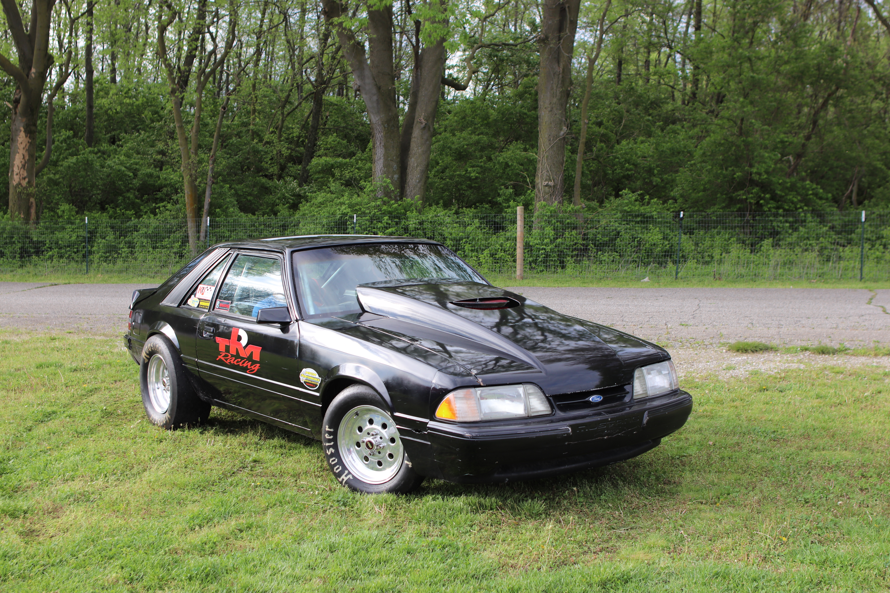

Facts and Info
Our 1984 Fox Body Mustang is the oldest TRM car that's still a part of the team. We've built it with a focus on drag racing, and there's nothing on this car that we haven't worked on at some point. It's currently powered by a Ford 351 Cleveland V8, bored and stoked to 408ci. The Cleveland is a realtively new addition and we're still refining the car to handle the substantial extra power! We've also installed a built C4 transmission with trans brake, a line lock, a racing dash and guages with a shift light, and Hoosier drag slicks.
Safety
We've safety is important on our team, so we've installed many safety enhancing systems on this car. These include a full roll cage, 5-point racing harnesses, a fuel-cell with an enclosure, an external battery cutoff switch, and a fire supression system. We also recently converted the rear axle to have disk brakes.